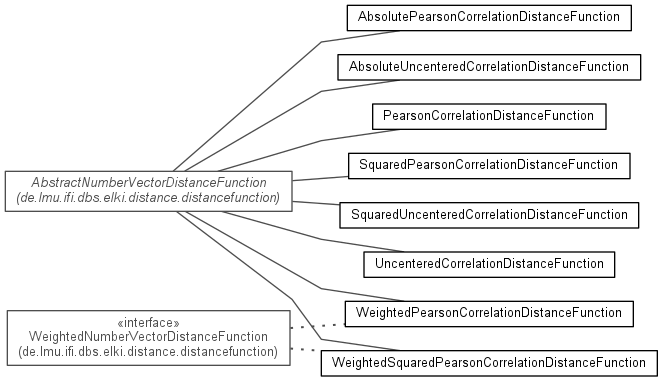

JavaScript is disabled on your browser.
Overview
Package
Class
Use
Tree
Deprecated
Index
Help
Prev Package
Next Package
Frames
No Frames
All Classes
Package de.lmu.ifi.dbs.elki.distance.distancefunction.correlation
Distance functions using correlations.
See:
Description

Class Summary
Class
Description
AbsolutePearsonCorrelationDistanceFunction
Absolute Pearson correlation distance function for feature vectors.
AbsolutePearsonCorrelationDistanceFunction.Parameterizer
Parameterization class.
AbsoluteUncenteredCorrelationDistanceFunction
Absolute uncentered correlation distance function for feature vectors.
AbsoluteUncenteredCorrelationDistanceFunction.Parameterizer
Parameterization class.
PearsonCorrelationDistanceFunction
Pearson correlation distance function for feature vectors.
PearsonCorrelationDistanceFunction.Parameterizer
Parameterization class.
SquaredPearsonCorrelationDistanceFunction
Squared Pearson correlation distance function for feature vectors.
SquaredPearsonCorrelationDistanceFunction.Parameterizer
Parameterization class.
SquaredUncenteredCorrelationDistanceFunction
Squared uncentered correlation distance function for feature vectors.
SquaredUncenteredCorrelationDistanceFunction.Parameterizer
Parameterization class.
UncenteredCorrelationDistanceFunction
Uncentered correlation distance.
UncenteredCorrelationDistanceFunction.Parameterizer
Parameterization class.
WeightedPearsonCorrelationDistanceFunction
Pearson correlation distance function for feature vectors.
WeightedPearsonCorrelationDistanceFunction.Parameterizer
Parameterization class.
WeightedSquaredPearsonCorrelationDistanceFunction
Squared Pearson correlation distance function for feature vectors.
WeightedSquaredPearsonCorrelationDistanceFunction.Parameterizer
Parameterization class.
Package de.lmu.ifi.dbs.elki.distance.distancefunction.correlation Description
Distance functions using correlations.
Overview
Package
Class
Use
Tree
Deprecated
Index
Help
Release 0.6.5~20140721 (2014-07-21_1140)
Prev Package
Next Package
Frames
No Frames
All Classes